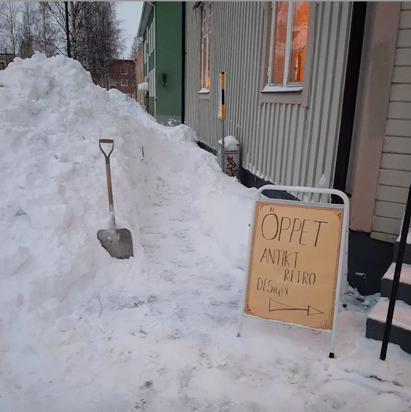
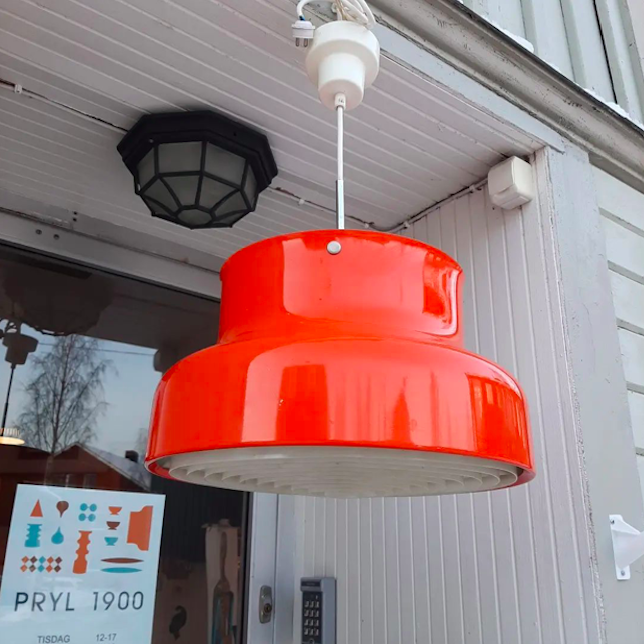
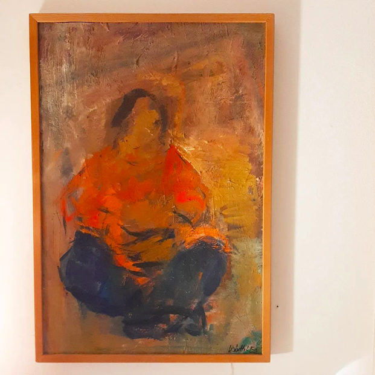

Har du samlat på dig en massa gamla saker eller förfogar över ett dödsbo och tycker att det är för jobbigt att sälja på en loppis eller köra sakerna på tippen? Hör då av dig till mig. Jag köper konst, porslin, glas, möbler, kläder, krukor, lampor, textilier, pynt och en massa annat, främst i trakterna kring Umeå, Örnsköldsvik och Skellefteå. Prylar av god kvalitet från alla tider kan vara av intresse.


